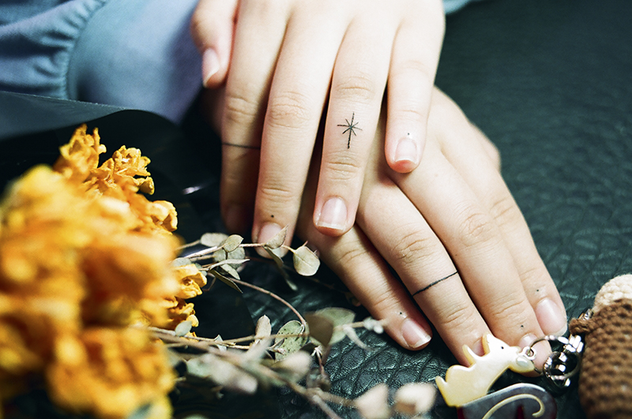

TATTOO
타투란 무엇인가?

文身, 타투(Tattoo), 입묵(入墨), 또는 자문(刺文)이라고 부르는 유사의료 기술로 살갗을 바늘로 찔러 피부와 피하조직에 상처를 낸 뒤
먹물이나 물감을 흘려 넣어 피부에 그림이나 무늬, 글씨를 새기는 행위를 말한다.
보통, 맹세의 표시나 의식 등을 하느라고 새기며 원시 사회에서는 주술이나 장식의 의도로 행하였다.
한 번 하면 쉽게 지워지지 않고, 지우게 될 경우 레이저 시술을 해야 하는데 문신을 하기 전처럼 깨끗하게 지워지는 일도 드물며
통증도 심하고 가격이 많이 들기 때문에 신중하게 결정해야 하는 행위이다.
문신을 새기기 전에는 정말로 고심해서 생각하고, 마음의 결정을 내린 이후라도
헤나 혹은
스티커타투 등으로 리허설을 먼저 해 본 후 그래도 후회가 없다면 시술을 결정하자.